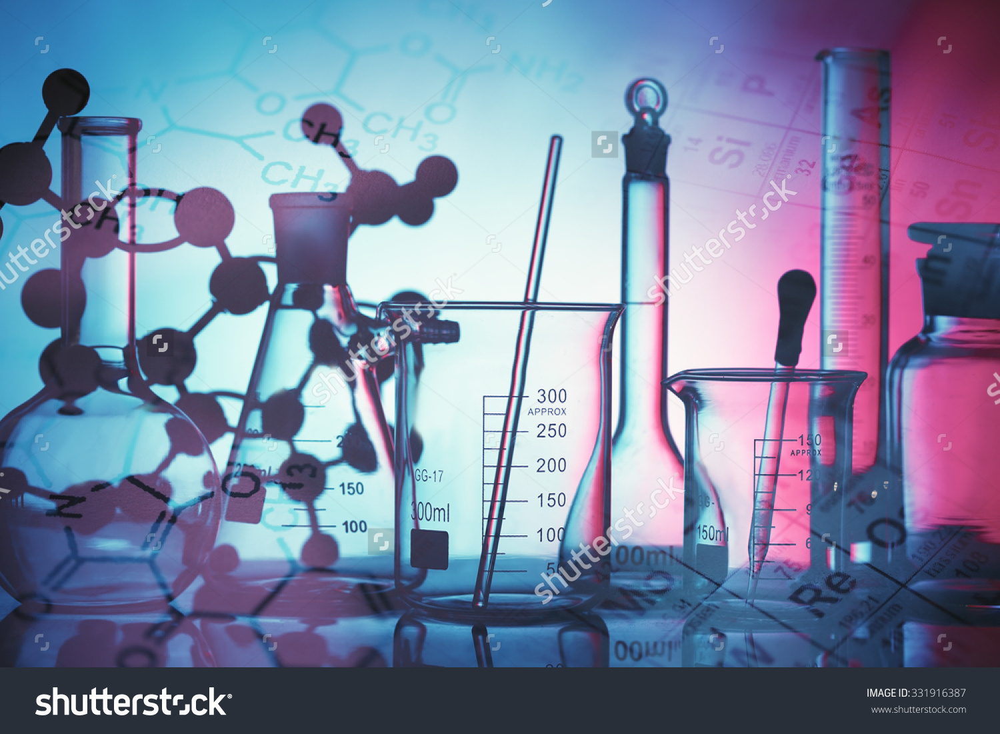
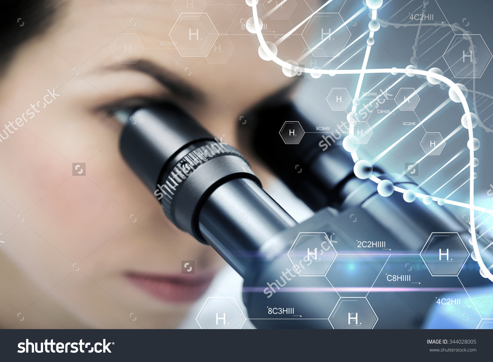

Hormonii joaca un rol important in organismul uman. Pentru ca un individ sa aiba o viata normala este absolut necesar ca sistemul endocrin sa functioneze normal. Exista un echilibru perfect intre organele “nonendocrine” si glandele endocrine, relatia dintre ele fiind una de reciprocitate. Astfel, anumite stari ale organismului uman, atat fiziologice (stres, efort fizic intens), cat si patologice (malnutritia, malabsorbtia, boli cardiace, metabolice, hepatice sau renale, administrarea anumitor medicamente) pot provoca dezechilibre hormonale.Endocrinologia se ocupă de studiul glandelor endocrine si al hormonilor produsi de acestea. Termenul endocrin a fost inventat de Starling pentru a defini actiunea hormonilor cu secretie internă Termenul de hormon, care de rivă dintr-o expresie grecească ce inseamnă "a pune in miscare" descrie foarte exact actiunea dinamică a hormo- nilor de a genera răspunsuri celulare si de a regla diverse procese fiziologice prin mecanisme de feedback. Spre deosebire de multe alte specialități medicale, endocrinologia nu poate fi definită prin termeni strict ana tomici. Glandele endocrine comunică intens cu alte organe prin intermediul sistemului nervos, al hormonilor,si al citokinelor.
Fabrici de hormoni
Majoritatea hormonilor sunt proteici si sunt produsi de glandele endocrine asezate în diferite părti ale corpului. Caracteristica principală a glandelor cu secretie internă este că hormonii secretati de acestea se varsă direct în sânge ori in circuitul A fost limfatic. Hormonii ajung prin intermediul sistemului circulator la toate componentele corpului fiind capabile astfel să influenteze diferite organe si tesuturi. Celelalte glande ale organismului îsi varsă hormonii in canale excretoare, iar produsii secretati ajung direct la locul de actiune, ceea ce le reduce sfera de actiune. Acestea se numesc glande exocrine. Mai functionează si în ambele moduri(de ex. pancreasul endocrin si exocrin)
Mesageri chimici

Transmiterea mesajelor intre diverse organe pe calea sangvină este relativ inceată, dar în general, este un proces sigur. Functionează bine si local si la o distantă apreciabilă de locul emiterii mesajului Din cauză că unii hormoni aflati în sânge ajung la toate sectoarele corpului, este foarte important ca efectul fiecăruia să fie foarte specific. Dacă acelasi hormon ar avea două sau mai multe sarcini diferite sau dacă mai multi hormoni ar produce acelasi efect, atunci acestia s-ar ciocni inevitabil unul cu altul si mecanismele de importantă vitală de redresare ar deveni nefunctionale
Cum functioneaza?

In interesul realizării pe deplin a sarcinilor, hormonii functionează asemenea unei chei. Fiecare hormon este recunoscut doar de o celulă specifică din organul sau tesutul pe care trebuie să-l activeze. Hormonul se poate atasa de această celulă; influentează doar acele celule care il recunosc si celulele, la rândul lor, reactionează doar la hormonii care le influentează. Cand este nevoie de ei, moleculele de hormoni se expulzeaza prin membrana celulara si patrund in fluxul sangvin. Dintre hormonii care circulă in sânge însă nu este nevoie de influenta imediata a fiecăruia. Acestia ajung in depozit, iar din rezerva de hormoni poate fi scoasă cantitatea necesară. Aceasta se intampla fiindcă hormonii se atasează unei proteine, neavând astfel activitate imediată, dar circulă incontinuu fluxul sangvin. Atunci cand este nevoie de hormon, legătura se desface usor, iar hormonu devine liber să actioneze. După o altă metodă, hormonul creat într-un anumit mod este prelucrat de un organ al organismului, intr-un hormon nou cu alte sarcini
Activitatea hormonilor
Daca hormonul aflat in circulatie atinge celula tintă, deschide sistemul si cuplează activitatea celulară corespunzătoare. Acest proces de cuplare se poate manifesta in mai multe feluri. O posibilitate este influentarea membranei celulare: membrana celulară lasă să treacă anumiti ioni sau molecule care declansează noi procese celulare. O altă formă: hormonul se leagă de receptorii membranei celulare si declansează eliberarea unei substante de transmitere secundare care porneste activitatea celulei. Hormonii steroizi pătrund usor prin membrana celulară si intră în reactie directă cu receptorii citoplasmatici ai celulei. După ce hormonii au declansat activitatea celulară necesară devin inutili, trebuind să părăsească sistemul. De obicei ajung in ficat unde se descompun dar se întâmplă ca tesuturile tintă să desăvârsească sarcina de descompunere. Sistemul de excretie al organismului înlătură în mod competent compusii rămasi solubili în apă.
Glandele endocrine
Hipotalamusul reprezinta regiunea centrala a diencefalului (de la nivelul creierului), fiind interpus intre talamus si hipofiza.
Care sunt functiile hipotalamusului?
Hipotalamusul face conexiunea dintre sistemul nervos si cel endocrin, prin legatura sa cu hipofiza. Legatura anatomica si functionala dintre hipotalamus si hipofiza se realizeaza prin intermediul sistemului port hipotalamo-hipofizar (in acest fel, hormonii produsi de hipotalamus sunt transportati la nivel glandei pituitare).
Ce hormoni secreta hipotalamusul?
- somatoliberina (GHRH) - stimuleaza sinteza si eliberarea de STH (hormonul de crestere);
- somatostatina (SS) - inhiba secretia de STH;
- dopamina - cu rol de inhibare a prolactinei;
- gonadoliberina (GnRH) - cand este secretat pulsatil controleaza secretia de FSH (hormon foliculostimulator) si LH (hormon luteinizant), atunci cant este secretat continuu, aboleste secretia celor doi hormoni sexuali;
- tiroliberina (TRH) - stimuleaza sinteza si eliberarea de TSH si prolactina;
- corticoliberina (CRH) - stimuleaza sinteza si eliberarea de POMC la nivel hipofizar, fiind generatorul biorimului circadian al ACTH-ului;
- hormonul antidiuretic (ADH) - cu rol in controlul volemiei si al echilibrului hidric si
- ocitocina - care faciliteaza ejectia laptelui si a contractiile uterine.
In afara functiei neuroendocrine, hipotalamusul intervine in controlul neurovegetativ. La nivelul acestuia sunt localizati: centrul satietatii si foamei, centrul termoreglarii, centrul ritmului somn-veghe si al integrarii activitatii sexuale si comportamentale.

Hipofiza (glanda pituitara) este situata la baza creierului, intr-o cavitate a osului sfenoid (saua turceasca) si posterior de chiasma optica. Hipofiza are dimeniuni reduse (10/12/8mm) si greutate mica, de 0,6-1.2 g. Glanda este formata dintr-un lob anterior (adenohipofiza) si unul posterior (neurohipofiza). Intre aceste doua structuri exista un lob intermediar, care in cele mai multe cazuri este rudimentar.
Adenohipofiza secreta urmatorii hormoni:
- Hormonul de crestere (STH) ce are actiuni asupra cartilajelor de crestere, anabolismului muscular si cresterii celulare. Cand STH-ul este secretat in exces determina acromeglia, iar atunci cand este in cantitate scazuta determina nanism;
- Prolactina - hormonul ce produce lactatia, fiind secretat de celulele lactotrope. Normal, se secreta in timpul sarcinii si postpartum. In afara acestor perioade, secretia de prolactina este patologica;
- TSH (hormon tireotrop) - cu rol in secretia hormonilor tiroidieni (T3 si T4) si cu efect trofic asupra glandei tiroide;
- ACTH (hormon adrenocorticotrop) - cu rol in secretia hormonilor corticosuprarenali si efect trofic asupra glandelor suprarenale;
- FSH (hormon foliculo-stimulant) - are la femei rol de recrutare a foliculilor ovarieni si rol in sinteza de estrogeni, iar la barbati stimuleaza spermatogeneza;
- LH (hormon luteinizant) - la femei, declanseaza ovulatia si stimuleaza secretia de hormoni androgeni la nivelul celulelor tecale si luteale, si la barbati stimuleaza sinteza de testosteron la nivelul celulelor Leydig.
La nivelul neurohipofizei sunt stocati hormonii neurohipofizari - ADH-ul (hormonul antidiuretic) si ocitocina (acestia fiind sintetizati de hipotalamus).
- ADH-ul stimuleaza retroresorbtia apei la nivel renal, intervenind in reglarea metabolismului hidric si a volemiei, are de asemenea rol vasoconstrictor, inhiba secretiile digestive si stimuleaza axa CRH-ACTH-cortizol;
- Ocitocina are rol in ejectia laptelui la femeile gravide si stimuleaza contractiile uterine.
Epifiza este o glanda endocrina de mici dimensiuni situata in centrul creierului (intre cele doua emisfere cerebrale), avand forma unui con de pin.
Glanda este ceva mai mare in perioada copilariei, insa cu trecerea anilor se calcifica si involueaza spre maturitate.
Principalul hormon pe care il sintetizeaza este melatonina - ce intervine in inhibarea dezvoltarii sexuale la copii si in reglarea ciclului somn-veghe.
Glanda pineala mai poate sintetiza in cantitati mici hormon luteinizant, hormon antidiuretic, neurofizina I si II, leucinencefalină, argintină - vasotocină, arginină - vasopresină si pinealina - cu rol hipoglicemiant.
Tiroida este cea mai mare glanda a sistemului endocrin, cantarind aproximativ 25-30 de grame. Este situata in partea anterioara a gatului (intre cartilajul cricoid si inelele traheale 5-6), avand forma de fluture sau de litera "H", fiind alcatuita din doi lobi tiroidienei, ovalari, uniti printr-un istm. Glanda are o culoare brun-roscata si o consistenta moale.
Tiroida dispune de o vascularizate bogata (prin artera tiroidiana superioara si inferioara). Inervatia este asigurata de plexurile nervoase vegetative ce insotesc traiectul arterelor.
Cum functioneaza glanda tiroida?
Lobi tiroidieni sunt compusi din lobuli tiroidieni, care la randul lor, sunt alcatuiti din foliculi tiroidieni. In interiorul foliculului se gaseste un coloid proteic care secreta o proteina - tiroglobulina- ce sintetizeaza hormonii tiroidieni: T3 (triiodotironina) si T4 (tiroxina).
De asemenea, glanda tiroida dispune si de celule parafoliculare in cantitate mica, care au rol in secretia de calcitonina. Secretia de hormoni tiroidieni (T3 si T4) este controlata de un alt hormon, de origine hipofizara (TSH).
Ce rol are glanda tiroida?
Hormonii tiroidieni au rol in:
- cresterea scheletala (prin efect direct, sau indirect prin cresterea hormonului de crestere si a somatomedinei);
- dezvoltarea si maturizarea sistemului nervos central;
- reglarea metabolismului proteic: intervine in echilibrul anabolism-catabolism;
- reglarea metabolismului lipidic: rol in scaderea grasimilor (colesterol, trigliceride);
- reglarea metabolismului glucidic: cresterea glicemiei prin mai multe mecanisme (creste absorbtia intestinala de glucoza, creste neoglucogeneza si glicogenoliza);
- reglarea metabolismului energetic: intervine in termogeneza;
- reglarea metabolismului mineral: creste necesarul de vitamine;
- sistemul cardiovascular: potentarea efectelor determina cresterea debitului cardiac si a frecventei cardiace;
- sistemul respirator: creste frecventa si amplitudinea respiratorie;
- sistemul digestiv: creste secretia digestiva si motilitatea intestinala;
- efect trofic pe musculatura scheletala si tegumente;
- cresterea catecolaminelor, a corticoizilor, a hormonului de crestere, a insulinei si a parathormonului.
- optimizarea functiilor sexuale;
Paratiroidele sunt glande endocrine situate pe fata posterioara a tiroidei, fiind in numar de patru - doua superioare si doua inferioare. Acestea au forma ovalara, alungita sau reniforma, fiind de dimensiuni mici (3-6/2-4/0,5-2 mm), cu o greutate de aproximativ 0,05 grame/glanda. Sunt formate din stroma conjunctiva si tesut glandular.
Glandele paratiroide secreta parathormonul (PTH) - hormon care intervine in reglarea metabolismului calciului si fosforului; stimuleaza osteoclastele si distructia tesutului osos, actionand la nivel intestinal, renal si osos.
Glandele suprarenale sunt organe perechi situate la polul superior la rinichilor, retroperitoneal, avand forma de virgula. Dimensiunile sunt, in medie, de 50 mm/25 mm/5 mm, cu o greutate de aproximativ 4 g/glanda.
Vascularizatia este asigurata de arterele suprarenale superioare, mijlocii si inferioare. Inervatia este asigurata de plexul renal si solar, distribuindu-se in mare parte medulosuprarenalei.
Glandele sunt formate din doua zone:
- corticosuprarenala (situata la periferie) care secreta glucocorticoizi, mineralocorticoizi si hormoni sexuali androgeni;
- medulosuprarenale (situata central) care secreta catecolamine - adrenalina si noradrenalina.
Ce rol au hormonii glucocorticoizi?
-asupra metabolismului glucidic - cresc sinteza glucozei (prin cresterea productiei hepatice de gluzoca si inhibarea captarii acesteia de catre celulele adipoase si musculare);
-asupra metabolismului lipidic: stimuleaza lipoliza si cresc concentratia de acizi grasi liberi in plasma; asupra metabolismului protidic: inhiba incorporarea aminoacizilor in proteine - cu efect antianabolic;
-efect tonic asupra sistemului nervos - determina euforie, excitatie, pana la stari psihiatrice acute;
-efect pe sistemul osos: cresc ritmul resorbtiei osoase si inhiba sinteza de colagen;
-efect asupra rinichilor: cresc rata filtrarii glomerulare;
-efecte hematologice: scad numarul de leucocite si eozinofile, cresc numarul total de neutrofile, de eritrocite si trombocite, activeaza coagularea;
-efecte cardio-vasculare: cresc inotropismul cardiac si sensibilitatea musculaturii netede la actiunea catecolaminelor.
Ce rol au hormonii mineralocorticoizi?
-cresc resorbtia tubulara de sodiu;
-scad resorbtia tubulara de potasiu;
-creste excretia urinara de hidrogen si de magneziu.
Ce rol au hormonii sexuali androgeni (dihidroepiandosteronul-DHEA si androstendionul)?
-efect virilizant - cu rol in dezvoltarea pilozitatii axilo-pubiene.
Ce rol au catecolaminele (adrenalina si noradrenalina)?
|Adrenalina|
-determina cresterea frecventei cardiace, a tensiunii arteriale, a debitului cardiac;
-inhiba constrictia bronsica;
-stimuleaza lipoliza;
-produce cresterea glicemiei;
-creste secretia de glucagon, renina, hormoni tiroidieni si paratiroidieni.
|Noradrenalina|
-scade ritmul cardiac, creste tensiunea arteriala;
-stimuleaza contractiile uterine;
-efectele metabolice sunt asemanatoare cu ale adrenalinei,
Pancreasul este o glanda anexa a sistemului digestiv, situat retroperitoneal si format din doua componente - una exocrina (95%) si una endocrina (5%). Pancreasul endocrin este alcatuit din aproximativ 1-2 milioane de celule Langerhans, dispunse sub forma de buchete sau de insule. Fiecare insula Langerhans este alcatuita din 200 de celule - celule alfa (20%) care secreta glucagon si celule beta (70%) care secreta insulina.
Ce rol are insulina?
-pe metabolismul glucidic: creste gradul de utilizare a glucozei de catre celule, depune glucoza sub forma de glicogen in muschi
-pe metabolismul lipidic: transforma glucidele in lipide la nivelul ficatului si tesutului adipos
-pe metabolismul protidic: stimuleaza sinteza proteinelor
Ce rol are glucagonul?
-stimuleaza gluconeogeneza din aminoacizi
- are efect lipolitic
- determina hiperglicemie prin glicogenoliza hepatica
Timusul este un organ mic, format din doi lobi - uniti printr-un istm, situat in cavitatea toracica, intre cei doi plamani, facand parte din sistemul endocrin. Acesta se dezvolta in perioada copilariei si a adolescentei, dupa care involueaza (la varsta de 10-12 ani glanda cantareste aproximativ 35 g, iar la 60 de ani - 15g). Astfel, functia timusul se realizeaza in perioada copilariei.
Care este rolul timusului?
- fiind un organ limfatic, are rol in mentinerea imunitatii, prin producerea continua si maturarea limfocitelor T;
- are functie endocrina, secretand diversi hormoni (timopoetina, timulina, timosinele alfa 1 si beta 4), cu rol in dezvoltarea si cresterea organismului.
Ovarul, glanda sexuala feminina, este un organ pereche, de forma ovalara, situat in micul bazin, avand o lungime de aproximativ 3 cm, o latime de 2 cm, o grosime de 1 cm si o greutate de 4 grame. Ovarul este o glanda mixta: exocrina si endocrina, cu rol in producerea ovulelor si in secretia hormonilor sexuali feminini, ce determina dezvoltarea caracterelor sexuale secundare.
Glanda sexuala feminina secreta urmatorii hormoni: estrogeni, progesteron, hormoni androgeni si peptide.
Hormonii estrogeni sau hormonii foliculari se sintetizeaza in cea mai parte in ovare si in mai mica masura la nivelul glandei suprarenale sau in placenta (in cazul femeilor insarcinate). Acestia sunt sintetizati din colesterol, si se clasifica in: estradiol, estrona si estriol.
Efectele estrogenilor:
- matureaza ovulul facandu-l apt pentru ovulatie;
- vascularizeaza mucoasa uterina;
- intervin in dezvoltarea vaginului, uterului, ovarelor si trompelor uterine;
- intervin in dezvoltarea caracterelor sexuale secundare: cresterea sanilor, a organelor sexuale externe si a pilozitatii axilo-pubiene;
- transmit hipofizei informatia ca ovului este matur, declansandu-se in mod indirect ovulatia;
- intervin in prima faza a ciclului menstrual, determinand cresterea si dezvoltarea endometrului (mucoasei uterine);
- stimuleaza cresterea osoasa prin inhibarea activitatii osteoclastelor;
- au efect antiaterogen;
- au rol in vascularizatia tegumentelor;
- au efect anabolic proteic;
- intervin in comportamentul sexual feminin, dupa perioada pubertatii.
La fel ca si estrogenii, progesteronul este un hormon sexual feminin secretat de ovar (de corpul galben), in a doua parte a ciclului menstrual si de catre placenta, in cantitati crescute, in timpul sarcinii. Progesteronul este sintetizat intr-o mica masura si de catre glandele suprarenale. Progesteronul, derivat din colesterol, intervine in sinteza testosteronului si a estrogenilor.
Efectele progesteronului:
- activitatea acestui hormon incepe in a doua parte a ciclului menstrual, dupa ovulatie, pregatind mucoasa uterina pentru o posibila sarcina, respectiv glandele mamare pentru secretia lactata;
- creste vascozitatea secretiei colului uterin si volumul secretiilor vaginale, impiedicand asftel ascensionarea spermatozoizilor spre uter;
- creste tonusul muscular al colului uterin, cu inchiderea acestuia, fiind un obstacol pentru spermatozoizi;
- creste temperatura bazala;
- are efect slab catabolic, prin cresterea eliminarii de azot la nivel renal
Hormonii androgeni sunt reprezentati de: androstendion, dihidrotestosteron, fiind secretati de stroma ovariana in cantitati reduse.
Peptidele secretate de ovar sunt reprezentate de relaxina, inhibina (inhiba secretia de FSH), activina (stimuleaza secretia de FSH) si ocitocina.
Top 20 hormoni

|

|

|

|

|

|
 |

|

|
 |
|
|
|
|
|
|
|
|
|
|